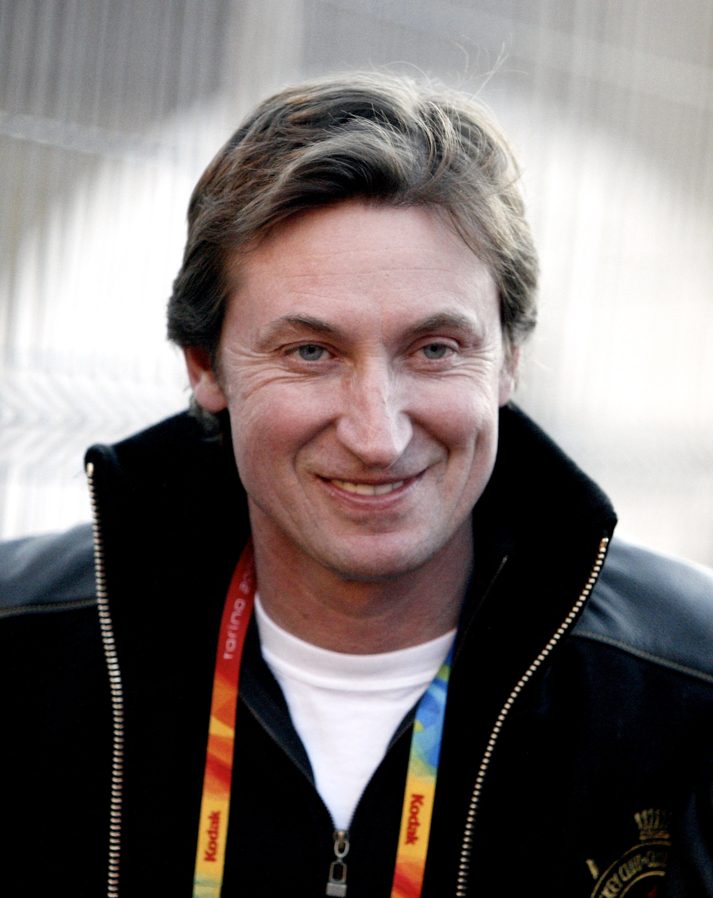
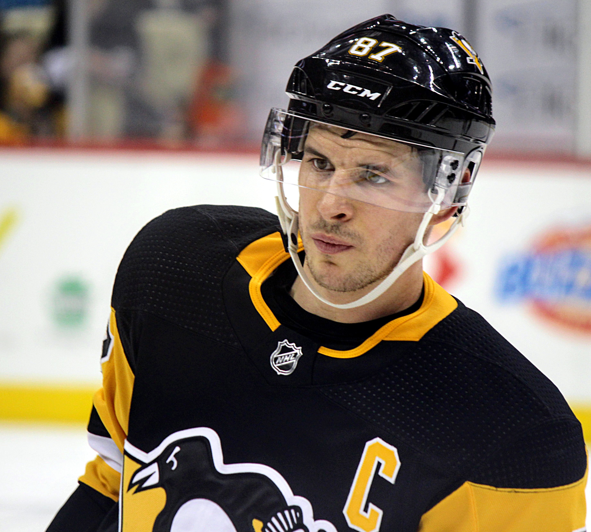
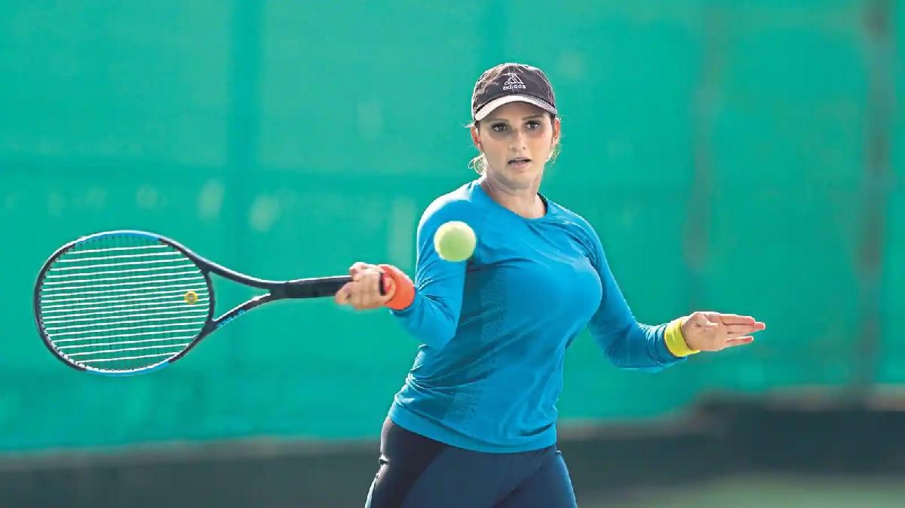
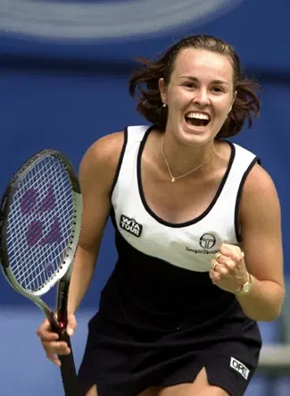
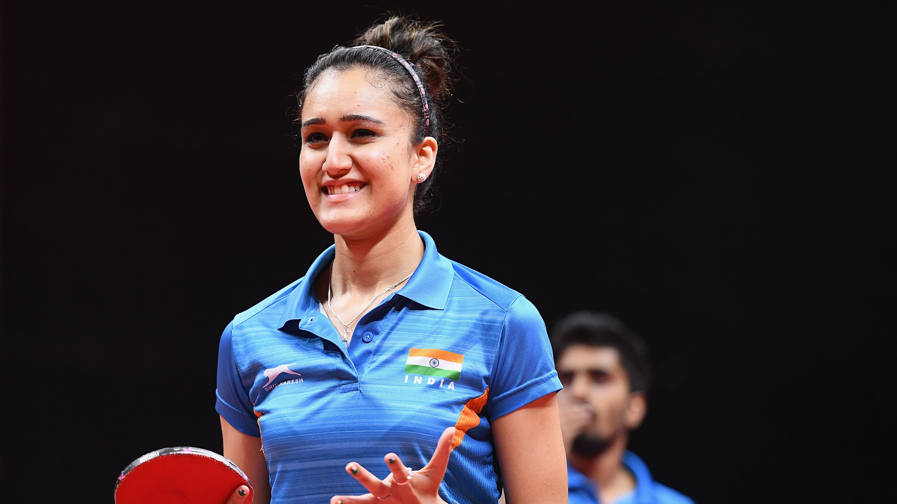

Famous Players
BackCristiano Ronaldo

Born: 5 February 1985 (age 37 years), Hospital Dr. Nélio Mendonça, Funchal, Portugal
Cristiano Ronaldo dos Santos Aveiro GOIH ComM is a Portuguese professional footballer who plays as a
forward for Premier League club Manchester United and captains the Portugal national team.
List of career achievements by Cristiano Ronaldo
- FIFA Puskás Award(2009)
- UEFA Men's Player of the Year Awardr(2014)
- The Best FIFA Man's Player(2017)
- Ballon d'Or Dream Team Award (2020)
Lionel Messi

Born: 24 June 1987 (age 35 years), Rosario, Argentina
Lionel Andrés Messi, is an Argentine professional footballer who plays as a forward for Ligue 1 club
Paris Saint-Germain and captains the Argentina national team.
List of career achievements by Lionel Messi
- FIFA World Player(2009)
- World Cup Golden Ball(2014)
- Laureus World Sports Awards(2019)
- MVP Copa América(2021)
Sachin Tendulkar

Born: 24 April 1973 (age 49 years), Mumbai
Sachin Ramesh Tendulkar AO BR is an Indian former international cricketer who captained the Indian national team.
He is regarded as one of the greatest batsmen in the history of cricket. He was a right-handed top-order bastmen in
the Indian Cricket Team.
List of career achievements by Sachin Tendulkar
- Arjuna Award (1994)
- The Khel Ratna Award(1997)
- Padma Vibhushan Awards(1999)
- Bharat Ratna Award(2013)
Sourav Ganguly

Born: 9 July 1972 (age 50 years), Behala, Kolkata
Sourav Chandidas Ganguly, affectionately known as Dada, is an Indian cricket administrator, commentator and former
national cricket team captain who served as the 35th President of the Board of Control for Cricket in India. He is
popularly called as Maharaja of Indian Cricket.
List of career achievements by Sourav Ganguly
- Padma Shri,Rammohan Roy Award(2004)
- Player Of Match Awards(2007)
Wayne Gretzky

Born: 26 January 1961 (age 61 years), Brantford, Canada
Wayne Douglas Gretzky CC is a Canadian former professional ice hockey player and former head coach. He played 20
seasons in the National Hockey League for four teams from 1979 to 1999.
List of career achievements by Wayne Gretzky
- Canada Cup(1984,1987,1991)
- Lionel Conacher Award(1980,1981,1982..)
- Olympic Gold (2002)
- World Cup of Hockey(2004)
Sidney Crosby

Born: 7 August 1987 (age 35 years), Cole Harbour, Canada
Sidney Patrick Crosby ONS is a Canadian professional ice hockey centre and captain of the Pittsburgh Penguins of
the National Hockey League. Nicknamed "Sid the Kid" and dubbed "The Next One", he was selected first overall by
the Penguins in the 2005 NHL Entry Draft.
List of career achievements by Sidney Crosby
- Hart Memorial Trophy(2007,2014)
- Mark Messier Leadership Award(2010)
- Ted Lindsay Award(2013,2014)
Sania Mirza

Born: 15 November 1986 (age 35 years), Mumbai
Sania Mirza is an Indian professional tennis player. A former doubles world No. 1, she has won six major titles –
three in women's doubles and three in mixed doubles. From 2003 until her retirement from singles in 2013, she was ranked
by the Women's Tennis Association as the Indian No. 1 in singles.
List of career achievements by Sania Mirza
- Arjuna Award(2004)
- Padma Shri(2006)
- Rajiv Gandhi Khel Ratna Award (2015)
- Padma Bhushan(2016)
Martina Hingis

Born: 30 September 1980 (age 42 years), Košice, Slovakia
Martina Hingis is a Swiss former professional tennis player. Hingis is the first Swiss player, male or female,
to win a major title and attain a world No. 1 ranking. She spent a total of 209 weeks as the singles world No.
1 and 90 weeks as doubles world No. 1, holding both No. 1 rankings simultaneously for 29 weeks..
List of career achievements by Martina Hingis
- WTA Diamond Aces Award(2002)
- World Sports Award for Comeback of the Year (2006)
- ITF World Champion(2017)
Manika Batra

Born: 15 June 1995 (age 27 years), Delhi
Manika Batra is an Indian table tennis player. As of November 2020, she is the top-ranked female table
tennis player in India and ranked 50th in the world as of March 2022. She was awarded the Major Dhyan Chand
Khel Ratna in 2020
List of career achievements by Manika Batra
- Three Gold Medals at South Asian Games (2016)
- Gold medal at the Commonwealth Games (2018)
- Rajiv Gandhi Khel Ratna Award (2020)
Neha Aggarwal
Born: 11 January 1990 (age 32 years), India
Neha Aggarwal Sharma is an Indian table tennis player who participated in the 2008 Summer Olympics in Beijing,
the only woman from India to feature in that discipline. Aggarwal earned her position at the Olympics by defeating
Poulomi Ghatak and Mouma Das, who had been favored to win.
List of career achievements by Neha Aggarwal
- COMMONWEALTH YOUTH GAMES (2008)
- Rajiv Gandhi State Sports Award(2009)